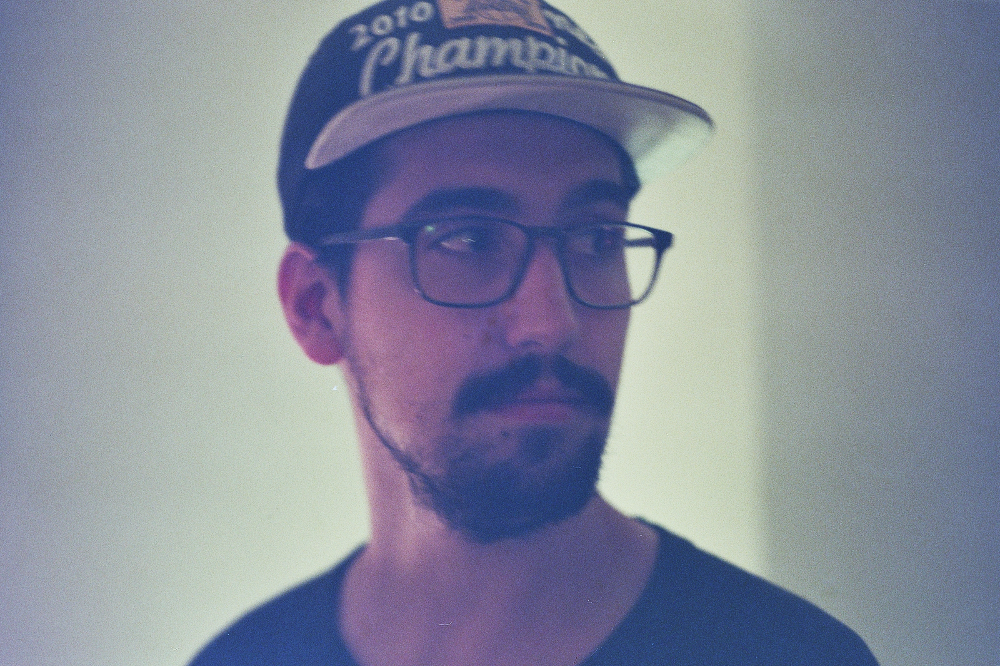

about me
hello. i'm caleb.
i started taking pictures after being inspired by a friend I had in high school. He would take his camera everywhere and always had great photos from everything he went to.
I'd be lying if I said I was that consistent in bringing my camera around with me, but it did inspire me to look at the world a different way. One of the best pieces of photo advice I ever got was, if you don't like what's in the frame when you're looking through the viewfinder, then move! There's always a more interesting, better lit frame waiting for you.
